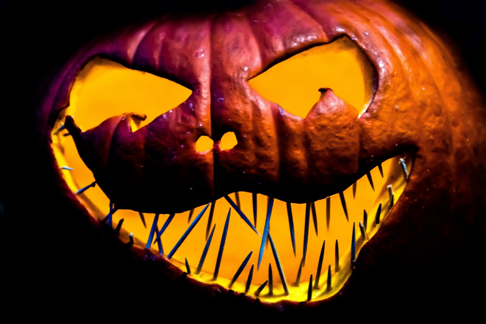
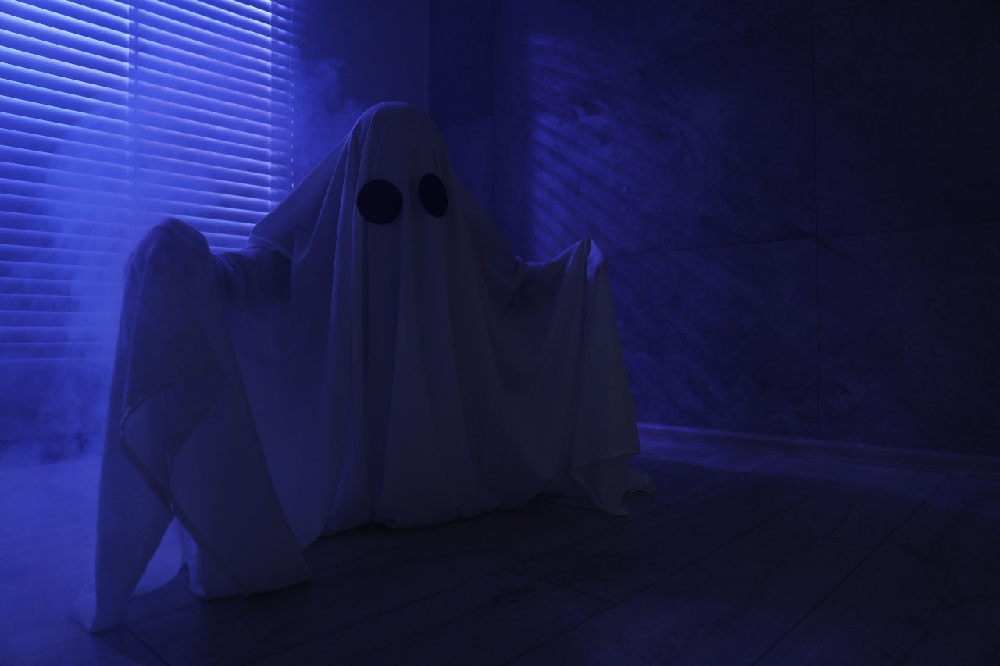

| IMAGEN | DESCRIPCION |
|---|---|
|  |
↠CALABAZA↞La imagen muestra una calabaza tallada con una sonrisa siniestra, iluminada desde su interior por una luz anaranjada que parpadea como una vela. Está colocada sobre un suelo cubierto de hojas secas y rodeada de una neblina ligera. El fondo es oscuro, con tonos morados y negros, creando un ambiente misterioso y típico de Halloween. |
|  |
↠FANTASMA↞La imagen muestra un pequeño fantasma blanco flotando sobre un campo de calabazas bajo la luz de la luna. Sus ojos brillan con un tono azul pálido y su forma ondulante parece moverse con el viento. A lo lejos se distingue un castillo oscuro entre la niebla, mientras murciélagos vuelan alrededor. La escena transmite una mezcla de diversión y misterio, ideal para la noche de Halloween. |